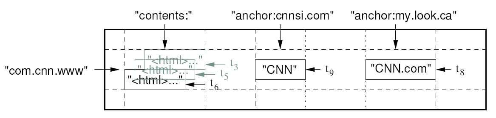

总述：数据库分类和典型产品
- 关系型数据库
- 关键词：SQL(结构化查询语言)、RDB(关系型数据库)
- 典型产品：MySQL、Oracle、SQL Server
- 非关系型数据库
- 关键词：NoSQL(Not only SQL)
- 典型产品：
- 键值对数据库：Memcached(临时性键值存储)、Redis(临时+永久键值存储)
- 文档数据库：MongoDB、CouchDB
- 图数据库：Neo4J、InfoGrid
- 列数据库：Cassandra、HBase
关系型数据库的数据模型
建立在关系模型基础上的数据库，借助于集合代数等数学概念和方法来处理数据库中的数据。
键值对数据库的数据模型
- Key指向Value的键值对，通常用HashTable来实现
- 键值对数据库中的Value值是纯非结构数据，一般作为字符串或者二进制处理
- 就是一个多功能的大字符串数组
文档数据库的数据模型
- Key指向(Attribute,Value)的键值对
- 和键值对数据库不同，文档数据库中的Value值是结构化数据
- 文档数据模型和关系型数据库的数据模型类比关系如下（以MySQL和MongoDB为例）：
| 关系型数据库 | 文档数据库 |
|---|---|
| database | database |
| table | collection(集合) |
| row(行) | document(文档) |

文档与关系
“关系”
如上所示，关系型数据库中的每一条记录存储都需要遵守一个固定的模式（固定的列数/属性数），每一列有特定的意义而且规定了数据类型。如果要获取不同的数据，数据库的模式就需要重新修改。
此外，关系型模型还有一个特点就是“数据库标准化”。按照关系型数据的NF法则，在关系型数据库结构时，会将大的表（多个列/属性）压缩成小的、整合的表（把重复的属性值拎出来单独一张表），然后互相之间以“外键”连接，就像下图所展示的一样。这种“外键”就是关系型数据库中的“关系”的体现。

“文档”
使用“文档”这个词似乎让人觉得奇怪，但是其实 “文档型数据模型”真的和传统意义的文字“文档”没有什么关系。他不是书、信或者文章，这里说的“文档”其实是一个数据记录，这个记录能够对包含的数据类型和内容进行“自我描述”。XML文档、HTML文档和JSON 文档就属于这一类。例如，上面的四条错误信息记录在JSON文档数据库中可能会是像下面这样：
- 记录1
1 | { |
- 记录2
1 | { |
比较
从上面的对比中也可以很容易的看出，这种文档型的记录方式所记录的数据是不规则的，很容易出现冗余信息，而关系型数据库则不会，比如上面的记录中，“DC”信息在关系型数据库中只会存储一次，由其他的表通过“外键”建立指向性的“关系”，使得一条数据被多条记录共享，极大地减少了重复数据的出现；并且当“DC”的某些信息发生改变时也完全不需要对其他数据进行进一步的修改。这也是关系型数据模型的“一致性”所带来的好处。
但是，这种“一致性”的缺陷在于，复杂的共享数据内部关系网的存在，使得关系型数据在多个服务器之间的传递变得复杂而缓慢，同时让读和写操作的性能变差，不利于分布式系统的构建。
而文档数据库则可以很好地解决这个问题。从上面文档数据库存储的方式可以看出，文档数据的每一条记录包含了所记录的抽象个体的全部信息，没有任何外部的引用，这条记录就是“自包含”的。这就使得记录很容易完全移动到其他服务器，因为这条记录的所有信息都包含在里面了，不需要考虑还有信息在别的表没有一起迁移走。
有利于分布式部署是文档型数据库最有力的优势。除此之外，用不规则的结构化文档存储数据的优势还有以下两点：
并发性
并发性的原理和分布式相同，都是源自文档数据库的“自包含”特性。关系型数据库中，为了保证数据的一致性，一张表一次只能由一个线程进行修改，当并发量大的时候显然很低效。而文档数据库因为“自包含”，所以可以由多个线程同时修改不同的文档，因此可以并发操作。
灵活性
面对大量而多样性的数据，如果使用关系型模型，就需要不断修改数据操作模式，这样，可能会引起系统负载的大大提升，同时也会大大增加处理的时间。这一点在社交网站应用中尤其明显：有人会发布风景照片、有人发布对时事的评论还有人分享音乐表达心情，不同的数据有不同的关系，不利于在关系数据库中处理。
优缺点总结
| - | 优点 | 缺点 |
|---|---|---|
| 文档数据库 | 没有数据间的依赖关系，有利于分布和并发 | 数据之间没有一致性 |
| 关系数据库 | 数据之间有一致性，不容易出错且节约存储空间 | 数据间严格而复杂的关系不利于分布式部署 |
图数据库的数据模型
图数据库是关系型数据库在“外键”连接方面进行特化后的一种数据库。相对于关系数据库来说，图数据库善于处理大量复杂互连接且低结构化的数据，这些数据变化迅速，需要频繁的查询——在关系数据库中，这些查询会导致大量的表连接，因此会产生性能上的问题。图数据库重点解决了拥有大量连接的传统RDBMS在查询时出现的性能衰退问题。
列数据库的数据模型
BigTable
列数据库模型最初来源于Google提出的Bigtable。Bigtable看起来像一个关系型数据库，采用了很多数据库的实现策略。但是Bigtable并不支持完整的关系型数据模型；而是为客户端提供了一种简单的数据模型，客户端可以动态地控制数据的布局和格式，并且利用底层数据存储的局部性特征。本质上说，Bigtable是一个键值（key-value）映射。
按作者的说法，Bigtable是一个稀疏的，分布式的，持久化的，多维的排序映射。
多维
Bigtable的键有三维：(row:string, column:string, time:int64)->string
- row：行键（row key）：
- 行键可以是任意字节串，通常有10-100字节。
- 行的读写都是原子性的。
- Bigtable按照行键的字典序存储数据。
- Bigtable的表会根据行键自动划分为片（tablet），片是负载均衡的单元。最初表都只有一个片，但随着表不断增大，片会自动分裂，片的大小控制在100-200MB。
- 行是表的第一级索引，我们可以把该行的列、时间和值看成一个整体，简化为一维键值映射
- column：列键（column key）：
- 列是第二级索引，每行拥有的列是不受限制的，可以随时增加减少
- 为了方便管理，列被分为多个列族（column family，是访问控制的单元），一个列族里的列一般存储相同类型的数据。
- 一行的列族很少变化，但是列族里的列可以随意添加删除。列键是按照
[列族名]:[列名]格式命名的。 - 访问控制以及磁盘和内存审计是在列家族层面上进行的。这些控制允许我们管理几种不同类型的应用，可以让应用只被允许浏览某些列，无法浏览全部列家族。
- 一行的列族很少变化，但是列族里的列可以随意添加删除。列键是按照
- time：时间戳（timestamp）：
- 时间戳是第三级索引。
- Bigtable允许保存数据的多个版本，版本区分的依据就是时间戳。
- 时间戳可以由Bigtable赋值，代表数据进入Bigtable的准确时间，也可以由客户端赋值。
- 数据的不同版本按照时间戳降序存储，因此先读到的是最新版本的数据。
- 用户可以设定只保存单元格中数据的最近n个版本，或者只保存足够新版本（比如只保存最近7天内的数据版本）。
BigTable的一行可以以如下所示的方式存储（以JSON为例）：
1 | table{ |
例如GFS原论文中给出的“Webtable”示例：

在“Webtable”中：
- 行键是倒序的URL，表示一个网页（倒序是为了让同一域名下的不同子域存储在一个地方）
- 列键分两个族：
contents族：该族中没有键，其中直接存储了网页内容及历史版本anchor:[网址]键：archor族中的键代表那些引用了该行对应网页的页面
稀疏
“稀疏”是指表中每一列的值的存储格式都可以有很大不同。
分布式
Bigtable依赖于google的几项重要的分布式技术：
- GFS(Google File System)：分布式的文件系统，是BigTable用来存储日志和数据文件的文件系统
- SSTable(Sorted String Table)：不可修改的有序的键值映射，提供了查询、遍历等功能，是BigTable存储数据的格式
- Chubby：一种高可用的分布式锁服务，在BigTable中于片定位、片服务器的状态监控、访问控制列表存储等任务
正如上文所说，Bigtable会将表（table）进行分片，片（tablet）的大小维持在100-200MB范围，一旦超出范围就将分裂成更小的片，或者合并成更大的片。每个片服务器负责一定量的片，处理对其片的读写请求，以及片的分裂或合并。片服务器可以根据负载随时添加和删除。
按照这种结构，Bigtable集群包括三个主要部分：
- 一个供客户端使用的库：负责用户与集群的通信
- 一个主服务器（master server）：负责将片分配给片服务器，监控片服务器的添加和删除，平衡片服务器的负载，处理表和列族的创建等。
- 注意，主服务器是用来管理片服务器的，不存储任何片，不提供任何数据服务，也不提供片的定位信息。客户端的读写操作是通过分布式算法直接在片服务器上进行的
- 许多片服务器（tablet server）：这里片服务器并不真实存储数据，而相当于一个连接Bigtable和GFS的代理，客户端的一些数据操作都通过片服务器代理间接访问GFS，就好像数据都存储在片服务器上。
客户端需要读写数据时，直接与片服务器联系。因为客户端并不需要从主服务器获取片的位置信息，所以客户端的读写操作并不需要访问主服务器，主服务器的负载一般很轻。
如何查询（片的定位）

TODO:学习原论文待续